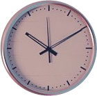
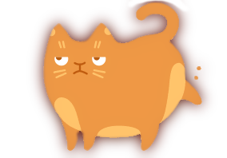
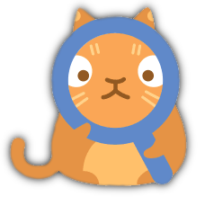
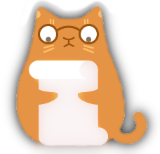
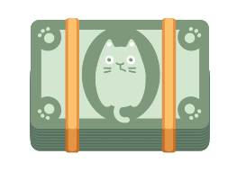

Привет!
Я выучил несколько человеческих слов.
Мне нужна твоя помощь для повторения.

Давай я буду называть слово,
а ты будешь находить этот предмет?
Тогда я буду уверен, что правильно
понимаю значения этих слов.


Итак, давай начнём!
Тебе нужно будет
найти 10 предметов.
Первый предмет:
Гитара